I made these for a Year 2 class while teaching a unit on telling the time during my placement. Each sheet was made for a particular lesson, so they're working resources rather than a polished pack. They're here in case they're useful to someone else.
Objective: Reading and showing o'clock, quarter past, half past and quarter to on analog and digital clocks, and moving between the two
The sheets follow the order I used them in: model it together, practise both directions, then match. Every stage has a harder sheet for students who finish early.
A blank template with a clock face, a box for the time in words, and a line for the digital time. Put it on the board and work through one time at a time with the class:
Why: before students convert on their own, I wanted them to see the words in the middle, linking the clock and the digits.
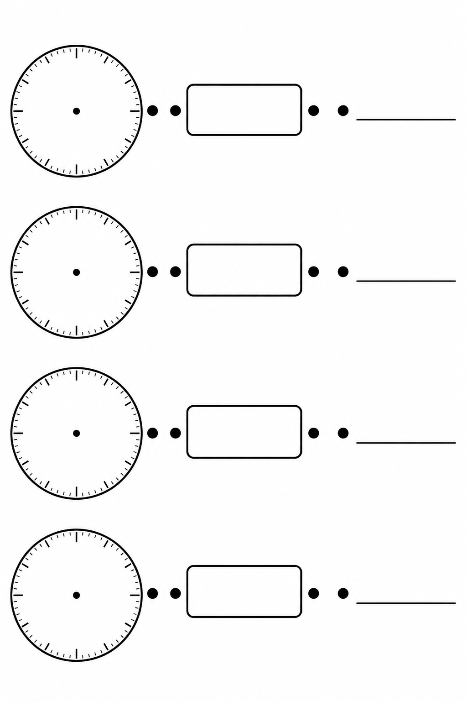
Blank templateDownload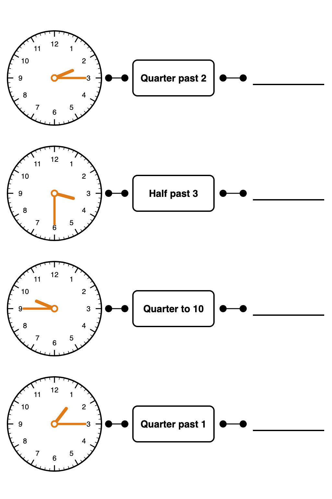
Set 1, hands and words filled inDownload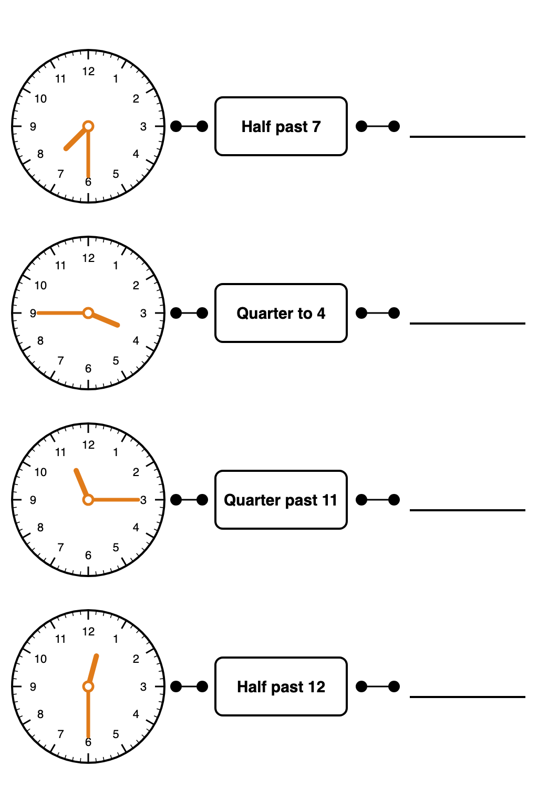
Set 2Download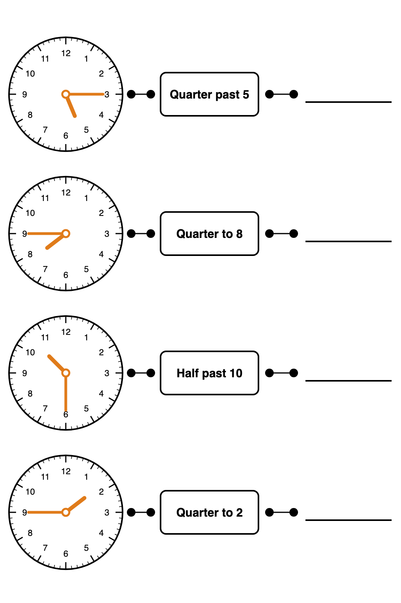
Set 3, two quarter to timesDownloadFive analog clocks showing quarter past, half past and quarter to. Students write each time on the digital clock beside it. Do the first row together, then check as a class and ask students to explain how they knew, especially for quarter to.
Why the extension: quarter to 12 and quarter to 1 put the hour hand just before the 12 or the 1, which catches out students who read the hour hand too quickly.
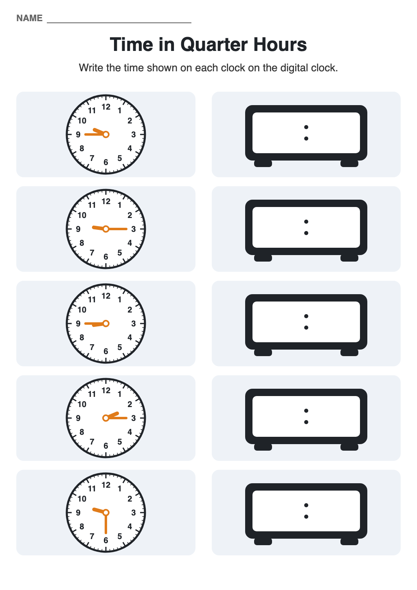
WorksheetDownload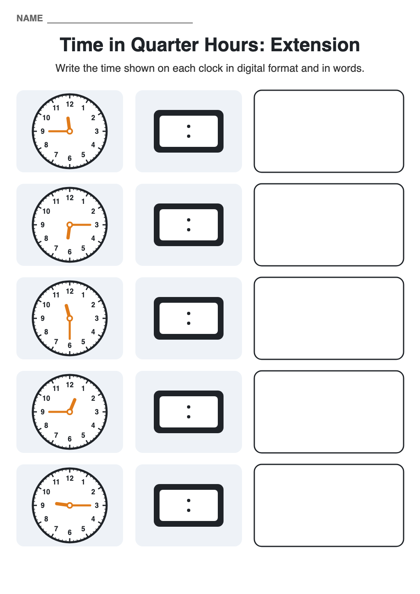
ExtensionDownloadThe reverse direction. Students read a digital time and draw the hands on a blank clock. The minute hand goes to the 12 for o'clock and the 6 for half past, and the hour hand is drawn shorter and halfway between the numbers for half past. Students then swap with a partner to check.
Why: doing both directions helps the mapping stick. Drawing the hands also shows who really understands where the hour hand goes, which reading a clock can hide.
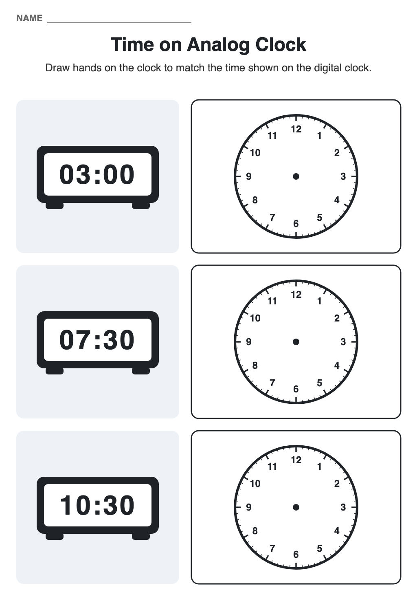
Worksheet: o'clock and half pastDownload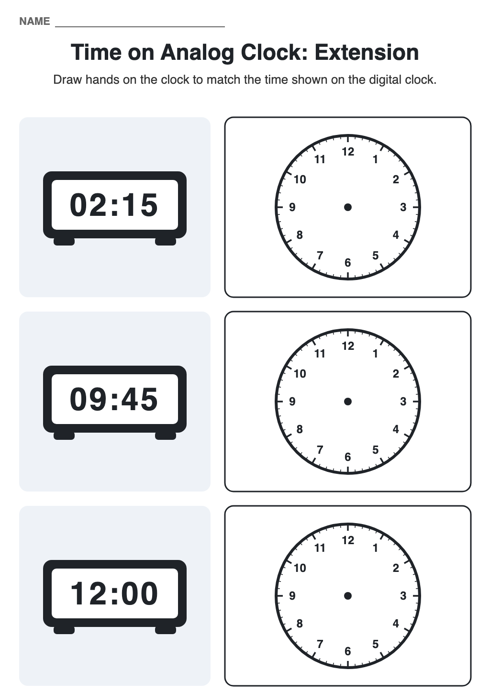
Extension: quarters and 12:00DownloadTwelve clocks and twelve digital times. Students draw a line from each time to the clock that shows it. Do the first one together: ask which clocks it could be, then which one it is and why. Every clock is used once, so students cross them off as they go.
Why: with all four types mixed on one page, students have to tell them apart rather than repeat one pattern. The second extension adds 12:45 and 1:45, where the hour hand sits just before the next number.
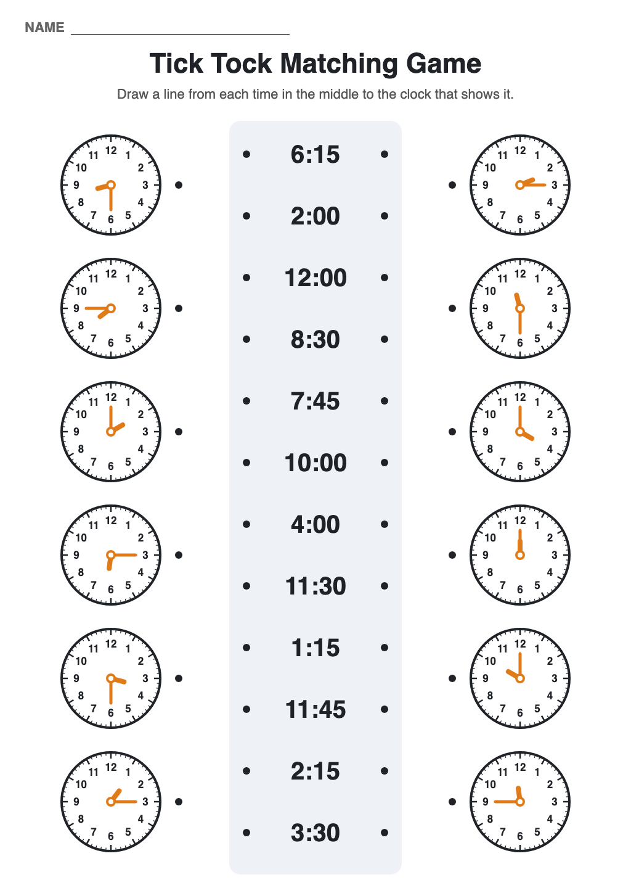
WorksheetDownload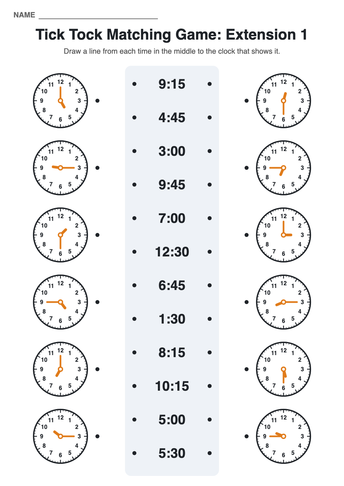
Extension 1Download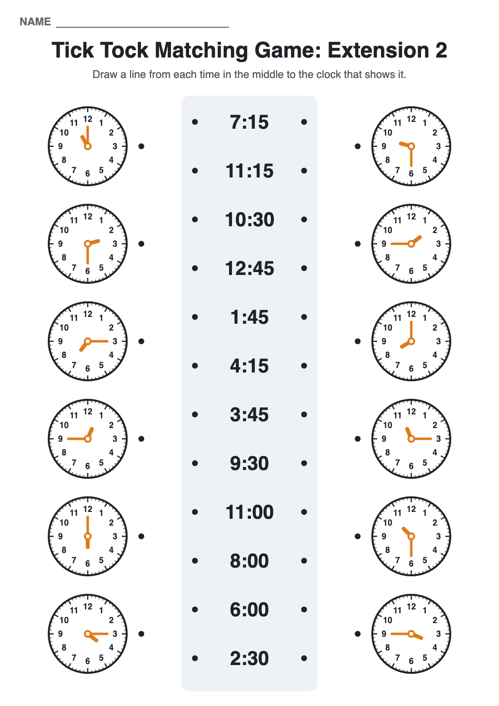
Extension 2DownloadPrinted on card and cut along the dashed lines, each row becomes a clock piece and a time-in-words piece. The pointed tab fits the notch, so matched pairs sit together. There's an o'clock set and a harder set with quarters and halves. Keep them in separate zip bags so the pieces don't mix.
Why: a hands-on activity early finishers can pick up without me, so I can keep working with the group that needs it. The puzzle shape lets them check their own matches.
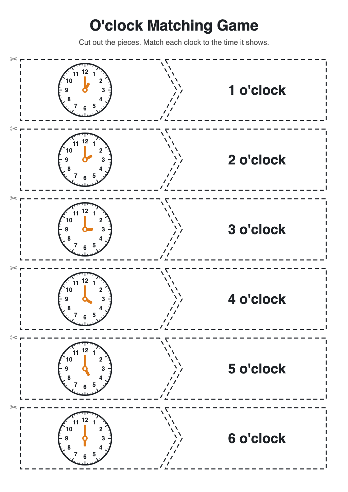
O'clock, 1 to 6Download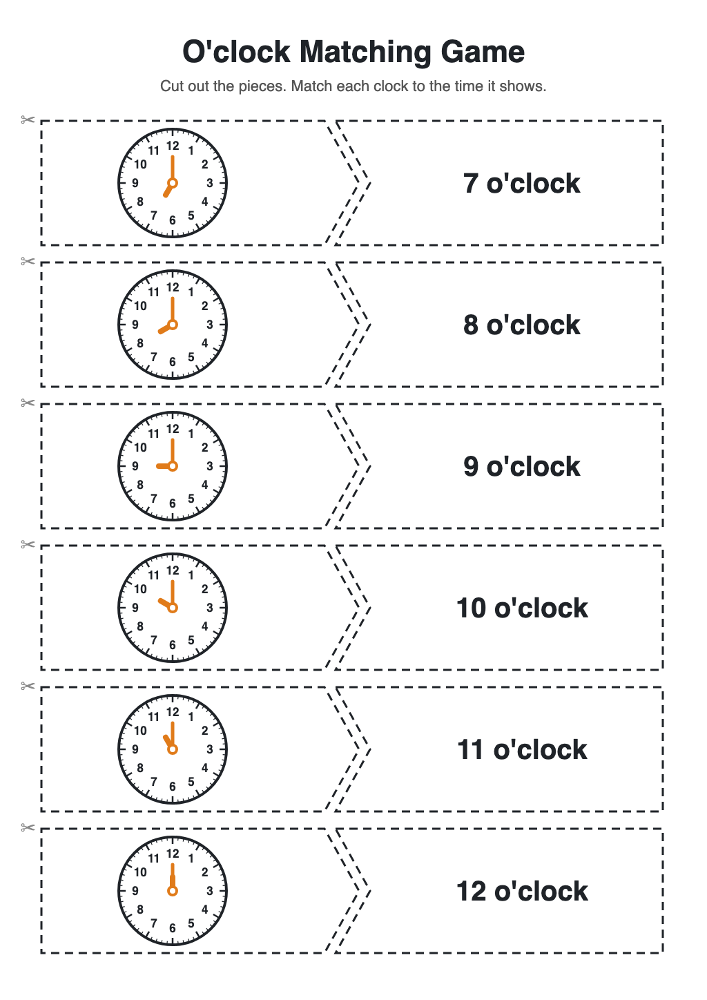
O'clock, 7 to 12Download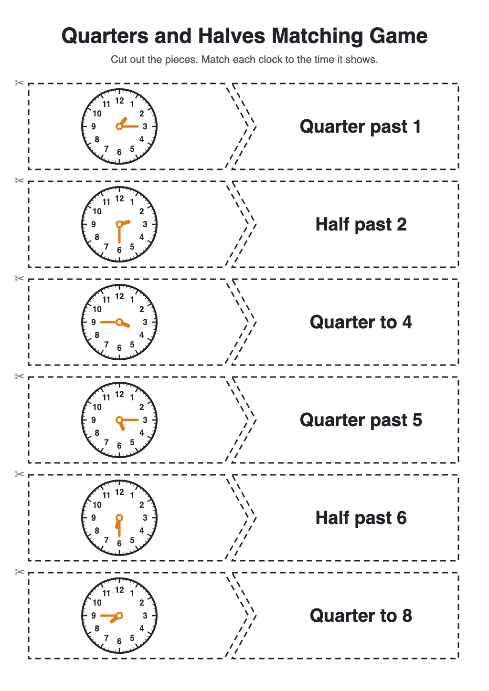
Quarters and halves 1Download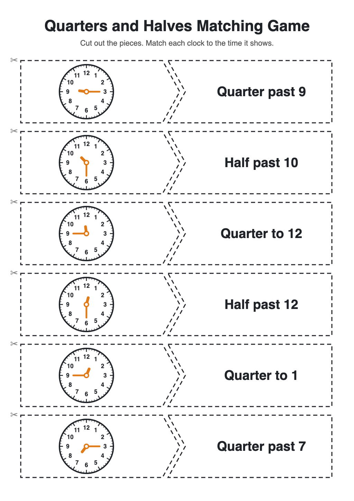
Quarters and halves 2DownloadFor the interactive side of this unit, try the Sky Clock.